Roteiro para quem vai testar a tela Ambientes (menu Cadastros) na versão nova. Use o ambiente de teste da versão nova; o sistema entregue só entra se um resultado parecer estranho.
Antes de começar
- Usuário
t.cadastroout.admin. - Um Ponto de água de teste para o caso de exclusão com dependente.
- Todo registro novo começa com
T.(se o ponto falhar, useT-e anote o campo). - Dados de teste ficam no ambiente: não apague o que não criou.
Passos
| # | O que fazer | O que deve aparecer | Caso do plano |
|---|---|---|---|
| 1 | Abrir Cadastros > Cadastro de ambientes e clicar em Incluir. Salvar vazio. | "A descrição é obrigatória." | CT-PRI-091 |
| 2 | Incluir só com a descrição T.AMBIENTE MIN. Depois um completo (tag, graus, local). |
Gravam; o histórico mostra "INCLUSAO DO REGISTRO". | CT-PRI-090 |
| 3 | Incluir de novo a mesma descrição. | Hoje aceita (DV-PRI-007). | CT-PRI-091 |
| 4 | Testar descrição de 255 e 256 caracteres e tag de 10 e 11. | 255 e 10 gravam; os maiores são recusados. | CT-PRI-091 |
| 5 | Alterar a tag com e sem justificativa. Abrir o histórico. | Exige justificativa; histórico campo a campo. | CT-PRI-092 |
| 6 | Inativar e abrir o Ponto de água. | O ambiente some da lista Localização. | CT-PRI-093 |
| 7 | Excluir um ambiente sem uso. | Pede só a confirmação. | CT-PRI-094 |
| 8 | Ligar um ambiente a um Ponto de água e tentar excluí-lo. | Deveria recusar; hoje exclui (N-012). | CT-PRI-095 |
| 9 | Pesquisar laboratorio e LABORATÓRIO; gerar Excel e Imprimir. |
Sem acento não acha; Excel com a lista filtrada. | CT-PRI-096, 097 |
Capturas de tela da versão nova
Imagens da rodada de testes de 17/10/2026, na ordem dos passos. Clique para ampliar.
Passo 2
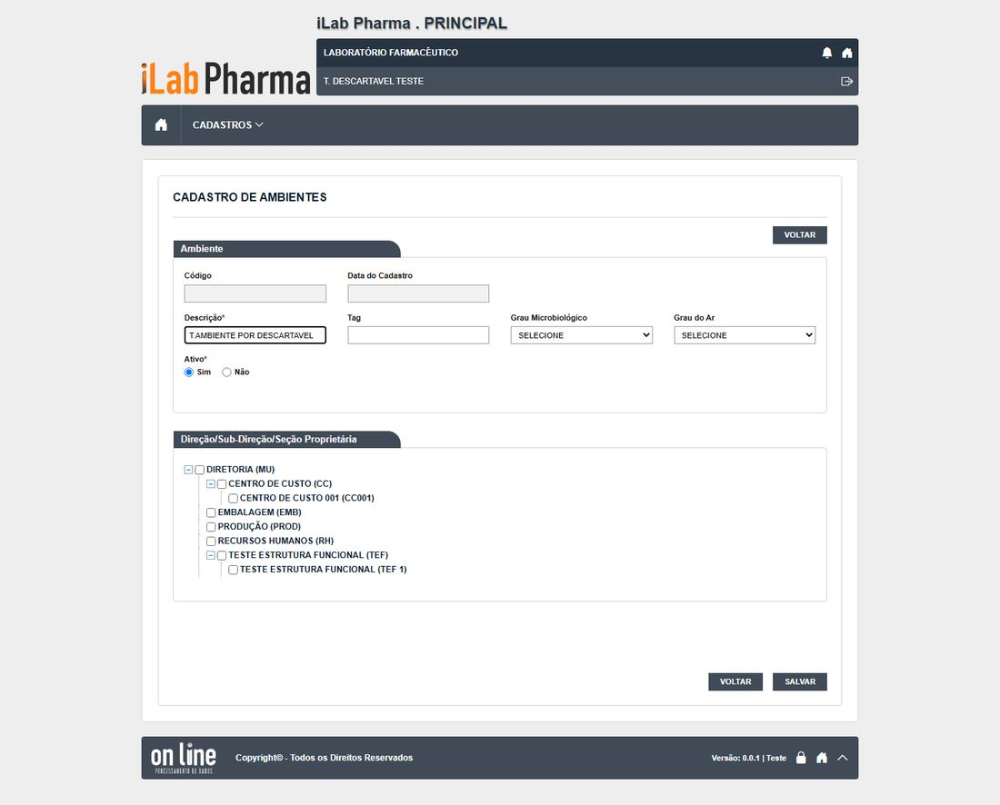
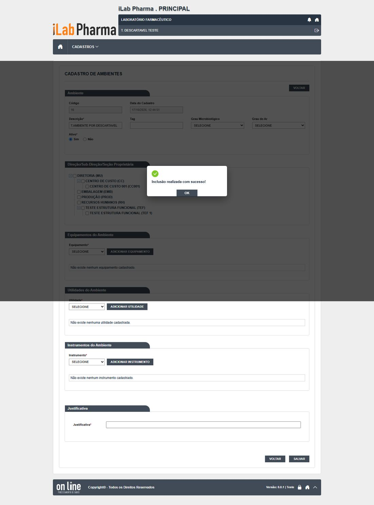
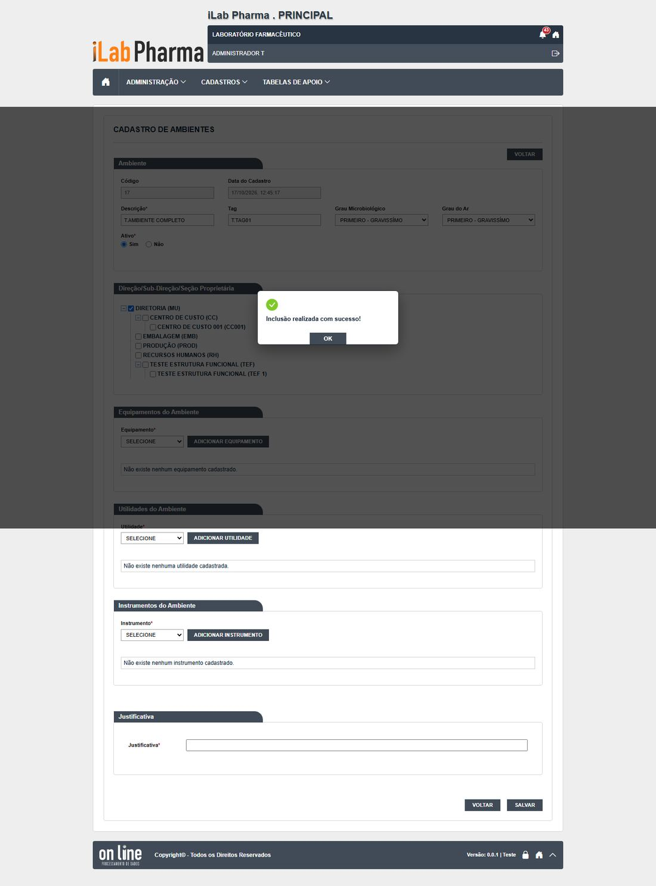
Passo 5
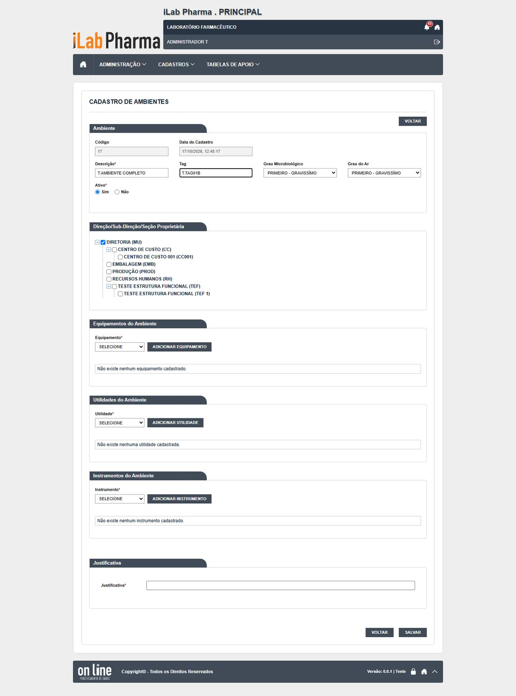
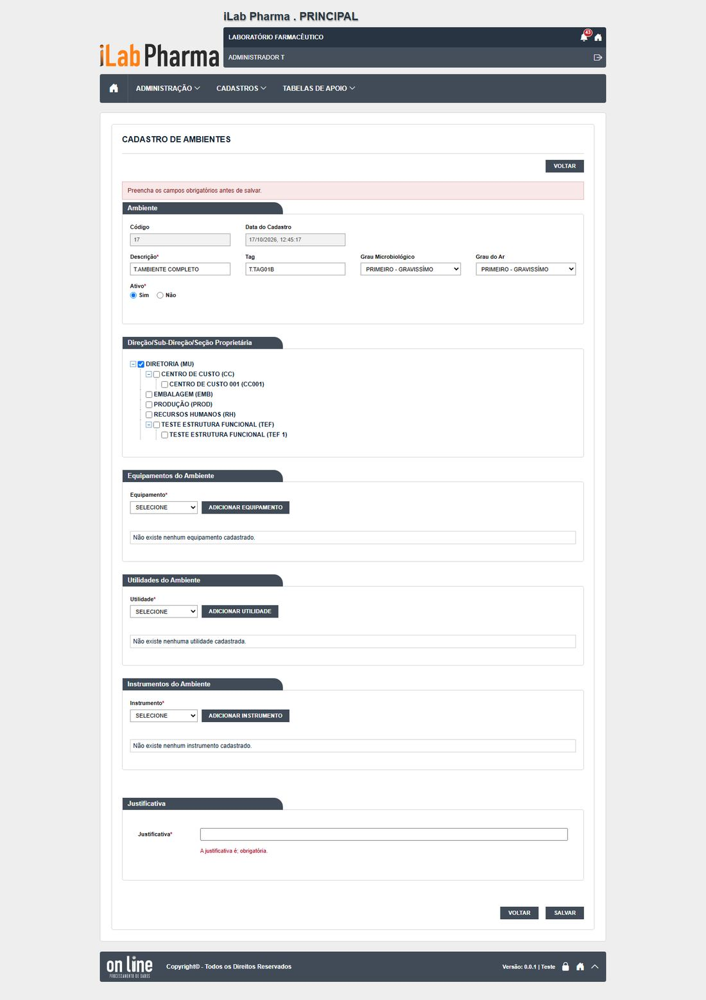
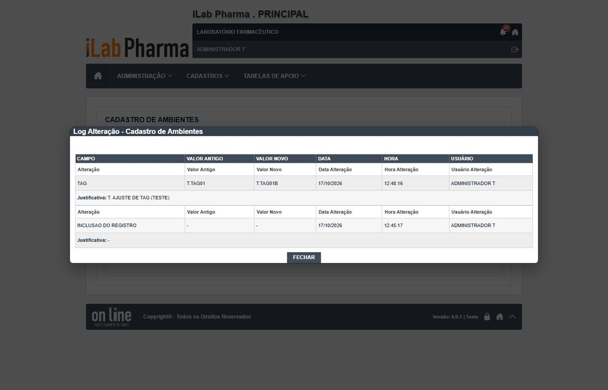
Passo 6
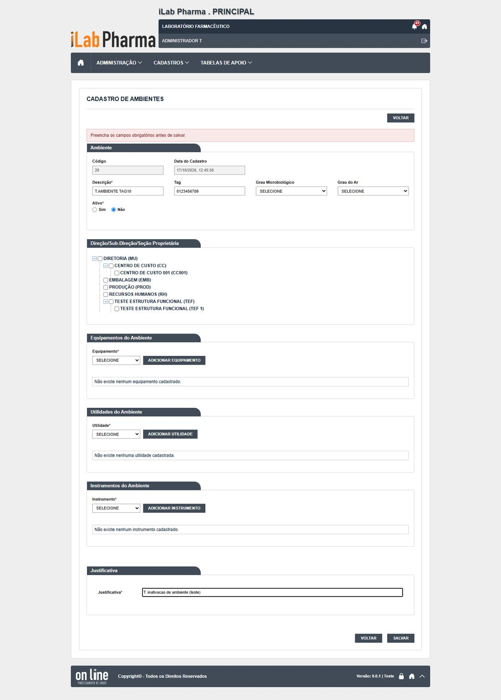
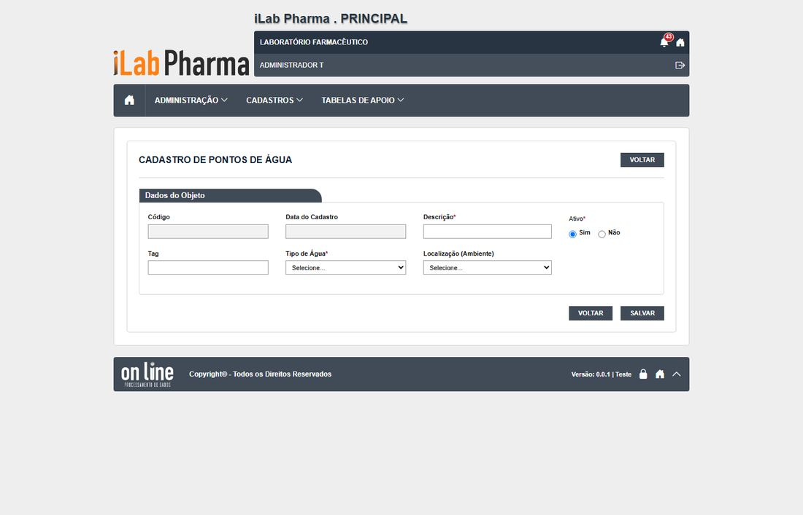
Passo 7
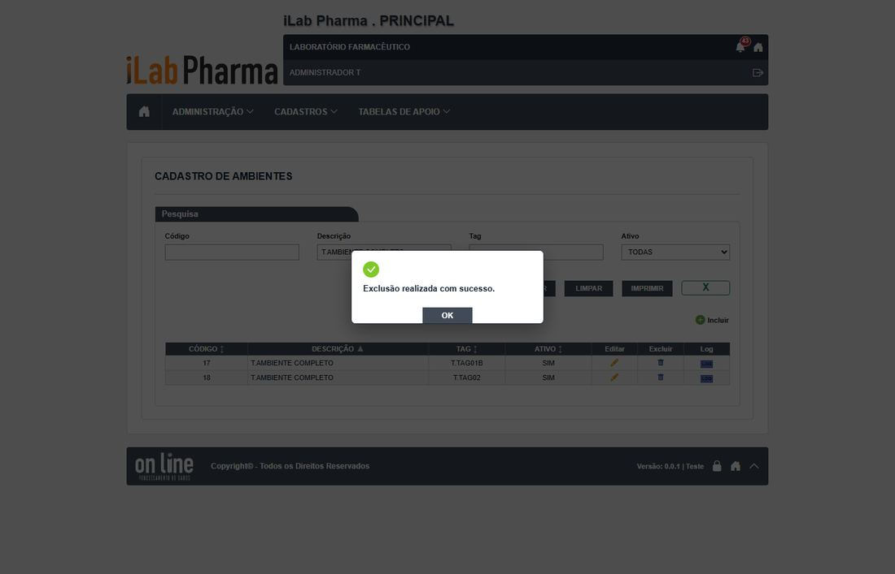
Passo 8
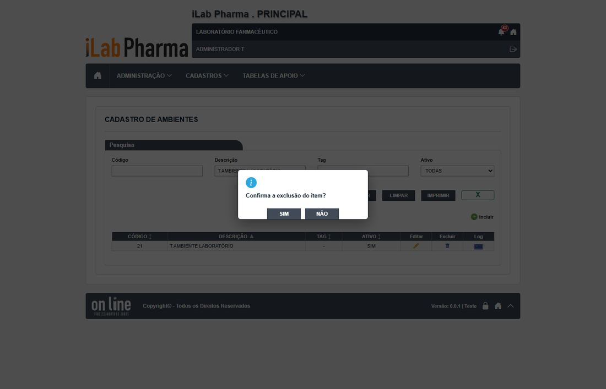
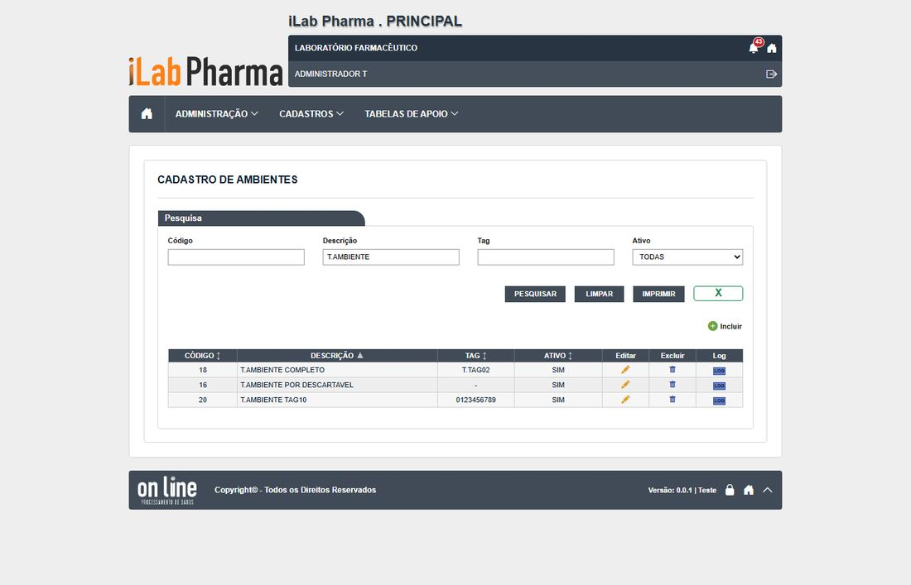
Passo 9
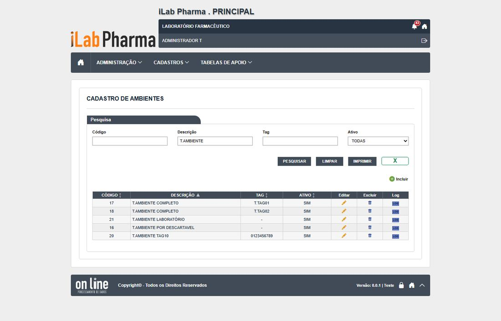
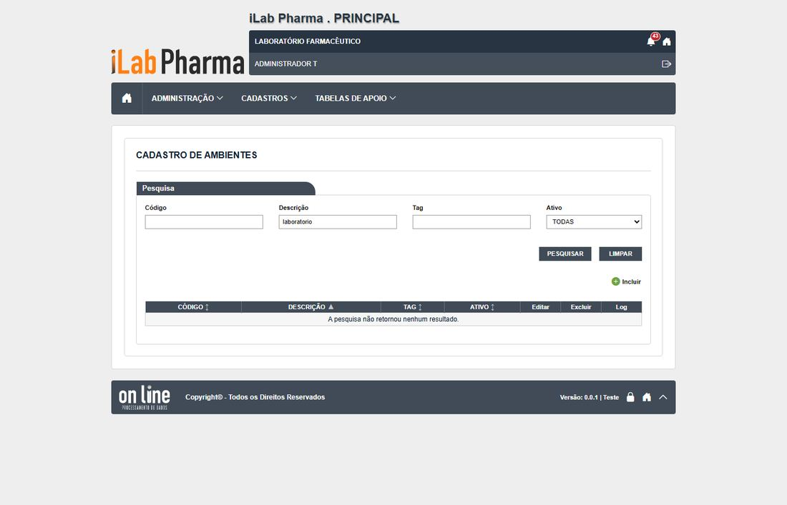
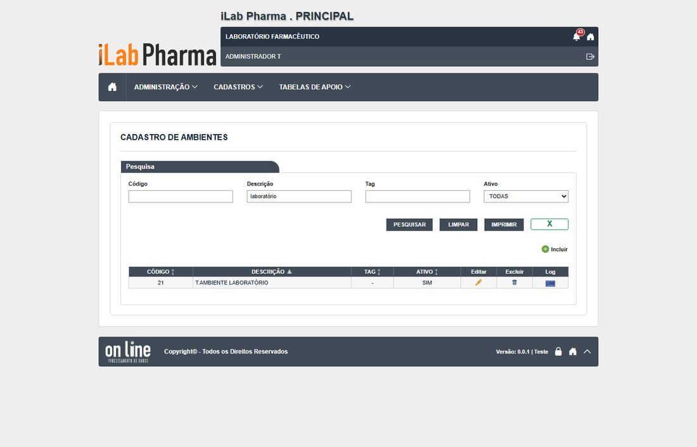
Como registrar
Para cada passo anote: o que apareceu na tela (copie a mensagem), a classe (Igual, Regressão, Melhoria, Novo ou Bloqueado), o defeito (se houver) e o nome da captura. Se um caso ficou Bloqueado, diga o motivo (usuário, perfil ou dado que faltou).
Se algo parecer uma falha de permissão, confira primeiro a Conta usuário e o Perfil do usuário antes de concluir que a tela falhou.
Tabela de resultados
A coluna Resultado do caso em 17/10/2026 traz o que a tela mostrou, para o caso do plano que o passo cobre (passos do mesmo caso repetem o resultado). Refaça o passo e use a última coluna para o seu resultado: se for diferente, anote a classe (Igual, Regressão, Melhoria, Novo ou Bloqueado) e o defeito.
| Passo | Resultado do caso em 17/10/2026 | Classe | Defeito | Captura | Seu resultado |
|---|---|---|---|---|---|
| 1 | Descrição vazia, 256 e tag de 11 recusadas; descrição duplicada aceita | Igual | N-022 | — | |
| 2 | Gravam; histórico "INCLUSAO DO REGISTRO" | Igual | — | CT-PRI-090-ambiente-passo-1-minimo, CT-PRI-090-ambiente-passo-2-gravado |
|
| 3 | Descrição vazia, 256 e tag de 11 recusadas; descrição duplicada aceita | Igual | N-022 | — | |
| 4 | Descrição vazia, 256 e tag de 11 recusadas; descrição duplicada aceita | Igual | N-022 | — | |
| 5 | Histórico campo a campo com justificativa | Igual | — | CT-PRI-092-ambiente-passo-1-editar, CT-PRI-092-ambiente-passo-2-sem-justificativa |
|
| 6 | Exige justificativa; some do Ponto de água | Igual | — | CT-PRI-093-ambiente-passo-1, CT-PRI-093-ambiente-passo-2-opcoes-depois |
|
| 7 | Sem justificativa | Igual | N-007 | CT-PRI-094-ambiente-passo-1 |
|
| 8 | Exclusão aceita (204); o ponto de água fica sem ambiente | Regressão | DV-PRI-N-012 | CT-PRI-095-ambiente-passo-1, CT-PRI-095-ambiente-passo-2-recusa |
|
| 9 | "laboratorio" não acha / Excel com as 3 linhas da lista; Imprimir devolve PDF | Igual | DV-PRI-008 | CT-PRI-096-ambiente-passo-0-lista, CT-PRI-096-ambiente-passo-1-sem-acento |